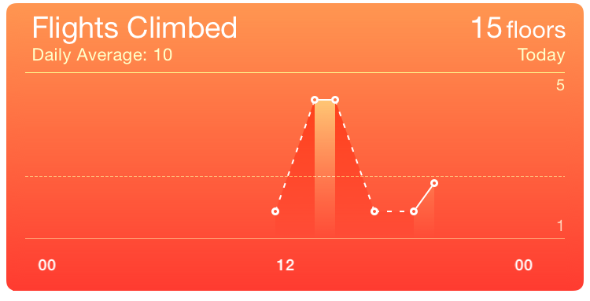

Say you've got some time-series data to display. “Time-series data,” you think, “that sounds like a line chart.” Hold your horses, not so fast. This is a common mistake, which produces charts such as this one:There are many other complaints I could make about this chart. Why does the series line change between dashed and solid? Why the shading under it (which also changes)? What is the value at the horizontal dotted line, and what does it indicate? And what actually are the values at the data points? It's a pretty good example of how not to visualise simple data, actually.  This chart, from the iOS Health app, is trying to show how many flights of stairs I climbed over the course of a single day. From the chart, what do you think happened about 1pm? Between 1:00 and 2:00? Between 2:00 and 3:00?
Data visualisation is fundamentally about communication. The most basic message communicated by a line chart is: “It makes sense to talk about values between the data points we have, and linear interpolation is a reasonable proxy for the data we don't have.” There are plenty of data sets where this assumption actually holds. The Health app also lets you record height and weight measurements, and displays these on a line chart. Suppose I measured my weight at 89kg a week ago, and 87 today. Does it make sense to talk about the values (that I didn't measure) in between these two data points? It does! And is linear interpolation a reasonable proxy for those values? It sure is!I should be more careful here: what is “reasonable” depends on the communicative goals of the visualisation. If we're interested in daily weight cycles, linear interpolation across a week is not going to communicate this clearly. In the case of weights it's not inherently unreasonable, though, whereas (as we will see below) it's not at all a good fit for stair-climbing.
Does it make sense to talk about the values in between the data points in the chart above? For the sake of the argument, let's redraw the chart above with simpler numbers and less distracting visual noise. The real numbers aren't very convenient for the points I want to make below, though, so I've massaged them a bit to highlight some interesting cases.
This simplified version of the chart indicates me climbing four flights of stairs at 2pm and two at 3pm. (So that's six flights in total: enough to get the heart-rate up.) Does it make sense to ask what happened in between? At 2:30, say? The chart would seem to indicate that I climbed three flights at 2:30. (So not six but nine flights in total: even better for my general fitness!) And at 2:15 the chart says three and a half, while at 2:45 it reads two and a half: my total somehow went up to fourteen flights. Something is definitely wrong here.
The problem is that “flights of stairs climbed” is not measuring some intrinsic quantity (like temperature), it's counting events that occur over a period of time. Misreading the chart as I did above amounts to adding the same events more than once to the total count. This shows another, more subtle, message communicated by a line chart: “The measurements can be considered to be instantaneous at the scale the chart displays.”No measurement is truly instantaneous, of course, but what matters is that it may be treated as such: either the time it takes is very small compared to the scale of the chart, or the measurement does not depend on the length of time it takes and can be considered to be ‘anchored’ to a single representative instant. But I don't really climb four flights of stairs at 2pm, I climb them over a ten-minute period from 2.03 to 2.13. And this is why it's not possible to ask, “What would the measurement be at 2.30?” (It's meaningful to ask, “How many stairs would we count between 2.15 and 2.30?” but the chart doesn't give you any way to answer the question.) For the same reason, it's not reasonable to use linear interpolation to guess the missing measurements between the two data points we have.
The basic rule of thumb here is: if you want to show how often something happens, use a bar chart. That's because how long you count for has an obvious impact on how much you count! A bar chart encodes “how long you count for” in the width of the bars: a bar should span the period from when you started counting to when you stopped. For the sake of the exposition here I'm assuming those counts were across an entire hour; if you look closely at the original Health app chart you'll see that's probably false, but it's not clear what logic they're using to produce their points.
But there's another problem that comes up once you do that: it's difficult, with a bar chart, to show the difference between “I counted no events” (the phone didn't go up any stairs) and “I wasn't counting” (the phone was off). A line chart shows a measurement of zero with a point at zero (joined by incoming and outgoing lines), and a missing measurement by no point (so the line between the surrounding two data points shows what linear interpolation would predict for the missing measurement). A bar chart confuses the two by simply not showing a bar in both cases.I suspect this is why the Health app uses a line chart here. It's designed as a general framework that any app can provide data for, so from inside the charting engine it simply can't tell if “no data” is a zero measurement or no measurement at all. In this case Apple could have used its knowledge of the data source (which is built in to the OS) to apply a more reasonable visualisation, but there are certainly other charts within the Health app where this is not possible for them. (As an aside, Apple fails to make this distinction in the data they record: there are no zero measurements and also no indications of when the device was not recording. You can't visualise data you don't have!)
So here is the dilemma if you have data that came from counting, but you weren't counting all the time: you have gaps which you want to indicate with a line chart, but counts which need a bar chart. A typical solution is to convert your data from counts to rates (count/time). A rate is an instantaneous measurement (it makes sense to ask my stair-climbing rate at 2:30) and linear interpolation will often be reasonable for rates when it is not for the underlying counts. To convert a bar chart showing counts into a line chart showing rates, we simply give each bar that indicates a measurement (including zeros, but not including missing data) a point, and join them into a line; the units of the y axis must change, of course, and we might adjust the x axis a little, depending on where we decide to ‘anchor’ our rate measurements in the count samples they come from.The most principled option is to mark the rate at the center of the sample period; this gives the linear interpolation its best interpretation. However if the samples are over ‘natural’ intervals (e.g., full hours) this will place the x values somewhat oddly (e.g., at the half-hours), potentially making the chart harder to read. Here I have ‘solved” this problem by adding additional guide lines; it's very likely possible to do better than this.
In this chart (shown on the right above) we can again ask what the interpolated value would be between two data points. Because the data points have moved to the half-hours, the new question is, “What is our guess for the value at 2pm (between the measured data points at 13:30 and 14:30)?” We can read this off from the chart (it's 3), but does it make any more sense than in the Health app version? Because of the relabeled y axis, it does! The question we are asking is no longer “How many stairs did I climb?” but “How fast was I climbing stairs?” My estimated stair-climbing rate at 2pm was 3 flights per hour, which is a perfectly good instantaneous stair-climbing rate; linear interpolation is a reasonable estimate here on the assumption that my stairs I climbed were evenly distributed throughout the hours before and after. (This assumption is very probably false, since stair-climbing is typically ‘bursty’ rather than smooth on a timescale of hours, but we don't have anything better given the choice of whole hours for our sample buckets.)
We can distill the above into some rules of thumb for deciding between line and bar charts for time-series data. Note that these are guidelines, not hard and fast rules: you still need to apply good judgement in deciding whether they will help you achieve your communicative goals.